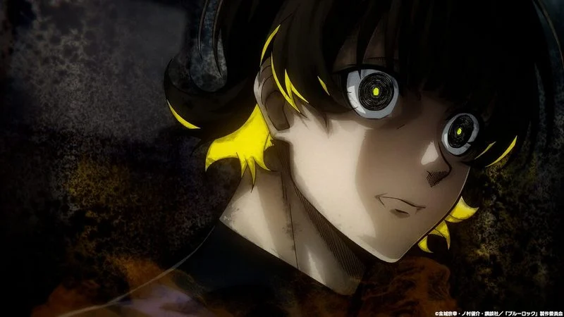

Blue Lock is a high-stakes sports anime where Yoichi Isagi joins a specialized soccer training camp, Blue Lock, to compete against other top players for the title of Japan's national team striker. It's filled with intense competition, strategic challenges, and explores themes of ambition and rivalry in soccer, making it a thrilling watch for sports anime enthusiasts.
Here are some of the famous quotes from Blue Lock:
— Yoichi Isagi
— Meguru Bachira
— Rin Itoshi
— Nagi
— Tabito Karasu
— Kunigami
— Hyoma Chigiri
Click to go back to main screen